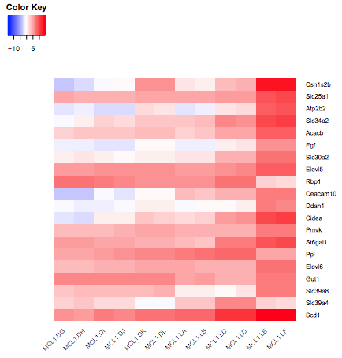
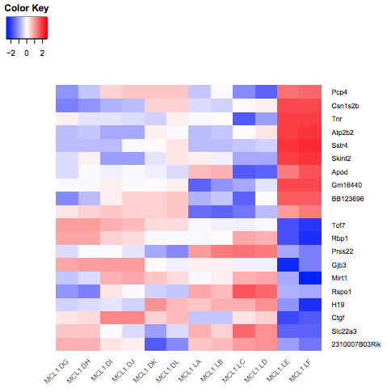

Heatmaps are commonly used to visualize RNA-Seq results. They are useful for visualizing the expression of genes across the samples. In this tutorial we show how the heatmap2 tool in Galaxy can be used to generate heatmaps. The heatmap2 tool uses the heatmap.2 function from the R gplots package. Here we will demonstrate how to make a heatmap of the top differentially expressed (DE) genes in an RNA-Seq experiment, similar to what is shown for the fruitfly dataset in the RNA-seq ref-based tutorial. We will also show how a heatmap for a custom set of genes an be created.
To generate a heatmap of RNA-seq results, we need a file of normalized counts. This file is provided for you here. The expression values have been normalized for differences in sequencing depth and composition bias between the samples. To generate this file yourself, see the RNA-seq counts to genes tutorial, and run limma-voom selecting “Output Normalised Counts Table?”: Yes. You could also use a file of normalized counts from other RNA-seq differential expression tools, such as edgeR or DESeq2. We also need some genes to plot in the heatmap.
The data for this tutorial comes from a Nature Cell Biology paper, EGF-mediated induction of Mcl-1 at the switch to lactation is essential for alveolar cell survival), Fu et al. 2015. This study examined the expression profiles of basal and luminal cells in the mammary gland of virgin, pregnant and lactating mice. Six groups are present, with one for each combination of cell type and mouse status.
Normalized counts file (genes in rows, samples in columns)
Differentially expressed results file (genes in rows, columns for P values and log fold change)
Genes of interest (custom list of genes to be visualized in heatmap)
Import data
Hands-on: Data upload
Create a new history for this RNA-seq exercise e.g. RNA-seq heatmap
To create a new history simply click the new-history icon at the top of the history panel:
Click on galaxy-pencil (Edit) next to the history name (which by default is “Unnamed history”)
Type the new name
Click on Save
To cancel renaming, click the galaxy-undo “Cancel” button
If you do not have the galaxy-pencil (Edit) next to the history name (which can be the case if you are using an older version of Galaxy) do the following:
Click on Unnamed history (or the current name of the history) (Click to rename history) at the top of your history panel
Type the new name
Press Enter
Import the normalized counts table.
To import the file, there are two options:
Option 1: From a shared data library if available (ask your instructor)
Rename the counts dataset as normalized counts, the limma-voom_luminalpregnant-luminallactate file as DE results and the list of genes as heatmap genes using the galaxy-pencil (pencil) icon.
Check that the datatype is tabular.
If the datatype is not tabular, please change the file type to tabular.
Click on the galaxy-pencilpencil icon for the dataset to edit its attributes
In the central panel, click galaxy-chart-select-dataDatatypes tab on the top
In the galaxy-chart-select-dataAssign Datatype, select tabular from “New type” dropdown
Tip: you can start typing the datatype into the field to filter the dropdown menu
Click the Save button
Click on the galaxy-eye (eye) icon of the the DE results file and take a look. It should look like below with 8 columns (just the first few rows are shown).
First we’ll demonstrate how to create a heatmap of the top differentially expressed genes in an RNA-seq dataset. To do this we need to extract the differentially expressed genes from the DE results file. This file contains the results from comparing gene expression in the luminal cells in the pregnant versus lactating mice. It includes genes that are not significantly differentially expressed. As in the RNA-seq counts to genes tutorial), we’ll call genes significantly differentially expressed in this dataset if they pass the thresholds of adjusted P value < 0.01 and fold change of > 1.5 (log2FC of 0.58).
Extract all significant genes
Hands-on: Extract the significant genes
Filter data on any column using simple expressionstool with the following parameters to extract genes with adj P < 0.01:
param-file“Filter”: DE results
param-text“With following condition”: c8<0.01
param-text“Number of header lines to skip”: 1
Filter data on any column using simple expressionstool with the following parameters to extract genes with absolute fold change > 1.5 (log2fc of 0.58):
param-file“Filter”: output of Filter tool
param-text“With following condition”: abs(c4)>0.58
param-text“Number of header lines to skip”: 1
Rename file to Significant genes
Extract the top significant genes
This gives us a file with all the significant genes, the genes that pass our thresholds for statistical and biological significance. As we can see there are many genes (~1,610), too many to plot in one heatmap, so we’ll select the top 20 by P value.
Hands-on: Extract the top significant genes by P value
Sort data in ascending or descending ordertool with the following parameters to sort by P value:
param-file“Sort Query”: output of 2nd Filter tool
param-text“Number of header lines to skip”: 1
param-select“on Column”: 7
param-select“in”: Ascending order
param-select“Flavor”: General numeric sort ( scientific notation -g)
Select first lines from a datasettool with the following parameters to select top genes:
param-text“Select first”: 21 (20 genes plus header row)
param-file“from”: output of Sort tool
Rename file as top 20 by Pvalue
Extract the normalized counts for top genes
Now we have a file that contains only the top 20 genes from the DE results. Next we need to get the normalized counts for these genes, from the file containing the normalized counts for all genes in the experiment, and then extract just the columns we need for the heatmap (the normalized counts and gene labels).
First click on the galaxy-eye (eye) icon and take a look at the normalized counts file that we imported. It should look like below (just the first few rows and columns are shown). Note that the normalized count values are log2. We will join our top 20 by Pvalue file to the normalized counts file, matching on the ENTREZID columns.
Hands-on: Extract the normalized counts for the top genes
Join two Datasets side by side on a specified fieldtool with the following parameters to join on the ENTREZID column:
param-file“Join”: the top 20 by Pvalue file
param-select“using column”: Column: 1
param-file“with”: normalized counts file
param-select“and column”: Column: 1
param-select“Keep the header lines”: Yes
The generated file has more columns than we need for the heatmap. In addition to the columns with normalized counts (in log2), there is the \(log\_{2} FC\) and other information. We need to remove the extra columns.
Cut columns from a tabletool to extract the columns with the gene symbols and normalized counts
param-text“Cut columns”: c2,c12-c23
param-select“Delimited by”: Tab
param-file“From”: the joined dataset (output of Join two Datasetstool)
The file should look like below with the 20 genes in the rows and the 12 samples in the columns (just the first few columns are shown).
Now that we have our file with just the normalized counts for the genes we want, we can create a heatmap.
Create heatmap of top genes
Hands-on: Plot the heatmap of top genes
heatmap2tool with the following parameters:
param-file“Input should have column headers”: output of Cuttool
param-select“Data transformation”: Plot the data as it is
param-check“Enable data clustering”: No
param-select“Labeling columns and rows”: Label my columns and rows
param-select“Coloring groups”: Blue to white to red
param-select“Data scaling”: Scale my data by row (scale genes)
You should see a heatmap like below. Note that here we are plotting the top genes differentially expressed in the luminal cells from the pregnant mice (MCL1.LC and MCL1.LD) versus the luminal cells from the lactating mice (MCL1.LE and MCL1.LF). This heatmap enables us to see the expression of these genes in all the samples from the different groups in the experiment (basal virgin, basal pregnant, basal lactating, luminal virgin, luminal pregnant, luminal lactating).
Why do we scale the rows (genes)? Try rerunning heatmap2 changing the “Data scaling” parameter to Do not scale my data.
The genes are ordered by P value. Can you make the heatmap with the genes ordered by fold change? Hint: Sort by the logFC column in ascending order to have the genes downregulated in the luminal pregnant vs lactating (negative fold change) at the top and the upregulated genes (positive fold change) at the bottom.
How could we make a heatmap of the top 10 most upregulated and top 10 most downregulated significant genes?
We don’t use clustering here as we want to keep the genes in the order we input (ordered by P value).
We scale the genes as otherwise large expression values from highly expressed genes would dominate the plot, see below.
Open image in new tab
Figure 6: Heatmap without scaling genes
To make the heatmap with these genes ordered by logFC, we could Sort the output of the Join step on the logFC column, then Cut the columns as before and remake the heatmap. It should look like below.
Open image in new tab
Figure 7: Heatmap sorted by logFC
To make a heatmap of the most upregulated and downregulated significant genes, we could Sort on the logFC column (instead of P value above), then use the Select first and Select last tools to select the genes with the largest and smallest fold changes (10 genes for each) and the Concatenate tool to combine the outputs of the first and last Selects into one file. We would then repeat the Join and Cut steps as before to get the normalized counts and make the heatmap as below (Note that one gene name in the middle is missing as it is a gene that has NA for gene symbol)
Open image in new tab
Figure 8: Heatmap of top 10 up and down
Create heatmap of custom genes
You can also create a heatmap for a custom set of genes. To demonstrate this, we will create a heatmap for the 31 genes in Figure 6b from the original paper using this dataset (see below). These 31 genes include the authors’ main gene of interest in the paper, Mcl1, and a set of cytokines/growth factors identified as differentially expressed. We will recreate this heatmap here. To see how to visualize these genes in a volcano plot see the tutorial here.
As in the previous example, we need to extract the normalized counts for just these 31 genes. To do that we will join the heatmap genes file with the normalized counts file, on the Gene Symbol columns this time (instead of ENTREZID), and then extract the columns we need.
Extract normalized counts for custom genes
Hands-on: Extract the normalized counts for the genes of interest
Join two Datasets side by side on a specified fieldtool with the following parameters:
param-file“Join”: the heatmap genes file
param-select“using column”: Column: 1
param-file“with”: normalized counts file
param-select“and column”: Column: 2
param-select“Keep the header lines”: Yes
Cut columns from a tabletool to extract the columns with the gene ids and normalized counts
param-text“Cut columns”: c1,c5-c16
param-select“Delimited by”: Tab
param-file“From”: the joined dataset (output of Join two Datasetstool)
The genes are in rows and the samples in columns, we could leave the genes in rows but we will transpose to have genes in columns and samples in rows as in the Figure in the paper.
Transposetool to have samples in rows and genes in columns
“Input tabular dataset”:
param-file“From”: the Cut dataset (output of Cuttool)
We now have a table with the 31 genes in columns and the normalized counts for the 12 samples in rows, similar to below (just the first few columns are shown).
Further information, including links to documentation and original publications, regarding the tools, analysis techniques and the interpretation of results described in this tutorial can be found here.
Feedback
Did you use this material as an instructor? Feel free to give us feedback on how it went.
Did you use this material as a learner or student? Click the form below to leave feedback.
Hiltemann, Saskia, Rasche, Helena et al., 2023 Galaxy Training: A Powerful Framework for Teaching! PLOS Computational Biology 10.1371/journal.pcbi.1010752
Batut et al., 2018 Community-Driven Data Analysis Training for Biology Cell Systems 10.1016/j.cels.2018.05.012
@misc{transcriptomics-rna-seq-viz-with-heatmap2,
author = "Maria Doyle",
title = "Visualization of RNA-Seq results with heatmap2 (Galaxy Training Materials)",
year = "",
month = "",
day = ""
url = "\url{https://training.galaxyproject.org/training-material/topics/transcriptomics/tutorials/rna-seq-viz-with-heatmap2/tutorial.html}",
note = "[Online; accessed TODAY]"
}
@article{Hiltemann_2023,
doi = {10.1371/journal.pcbi.1010752},
url = {https://doi.org/10.1371%2Fjournal.pcbi.1010752},
year = 2023,
month = {jan},
publisher = {Public Library of Science ({PLoS})},
volume = {19},
number = {1},
pages = {e1010752},
author = {Saskia Hiltemann and Helena Rasche and Simon Gladman and Hans-Rudolf Hotz and Delphine Larivi{\`{e}}re and Daniel Blankenberg and Pratik D. Jagtap and Thomas Wollmann and Anthony Bretaudeau and Nadia Gou{\'{e}} and Timothy J. Griffin and Coline Royaux and Yvan Le Bras and Subina Mehta and Anna Syme and Frederik Coppens and Bert Droesbeke and Nicola Soranzo and Wendi Bacon and Fotis Psomopoulos and Crist{\'{o}}bal Gallardo-Alba and John Davis and Melanie Christine Föll and Matthias Fahrner and Maria A. Doyle and Beatriz Serrano-Solano and Anne Claire Fouilloux and Peter van Heusden and Wolfgang Maier and Dave Clements and Florian Heyl and Björn Grüning and B{\'{e}}r{\'{e}}nice Batut and},
editor = {Francis Ouellette},
title = {Galaxy Training: A powerful framework for teaching!},
journal = {PLoS Comput Biol} Computational Biology}
}
Congratulations on successfully completing this tutorial!
You can use Ephemeris's shed-tools install command to install the tools used in this tutorial.
5 stars:
Disliked: When I use a large number of genes (50, 100 genes or more), not all gene names appear in the heat map graph (only about 25 to 30 genes). Is there any way to solve this issue?
May 2024
5 stars:
Liked: the way it explain things and specially the questions and answers
April 2024
5 stars:
Disliked: I could not get the log FC function to work. This is where the heat map is ordered in accordance with fold changes which is the most meaningful for those of us who are familiar with real time PCR (qPCR) and tells us which genes are undergoing the most significant changes in expression. When I followed the instructions and repeated the sequence of tools, after the cut step, all I had left was the top line. Could not overcome it.
December 2021
5 stars:
Liked: You iluustrated the principles of each analysis step.
Disliked: I am not sure where I can find the codes for practice.
November 2021
4 stars:
Disliked: This doesn't tell me what library or package heatmap2 function is in - i can't seem to find it elsewhere.
May 2020
5 stars:
Liked: Detailed, organised and very easy to follow plus the additional questions and answers are good.
Disliked: It was good. More explanation on when to choose along with explanation of different options available in drop downs (but for this, the ones interested can go to links to figure out details too)
5 stars:
Liked: Every step is explained properly and easy to follow.
Questions:
 Open image in new tab
Open image in new tab
 Open image in new tab
Open image in new tab Open image in new tab
Open image in new tab Open image in new tab
Open image in new tabOpen image in new tab
 Open image in new tab
Open image in new tab Open image in new tab
Open image in new tab Open image in new tab
Open image in new tab